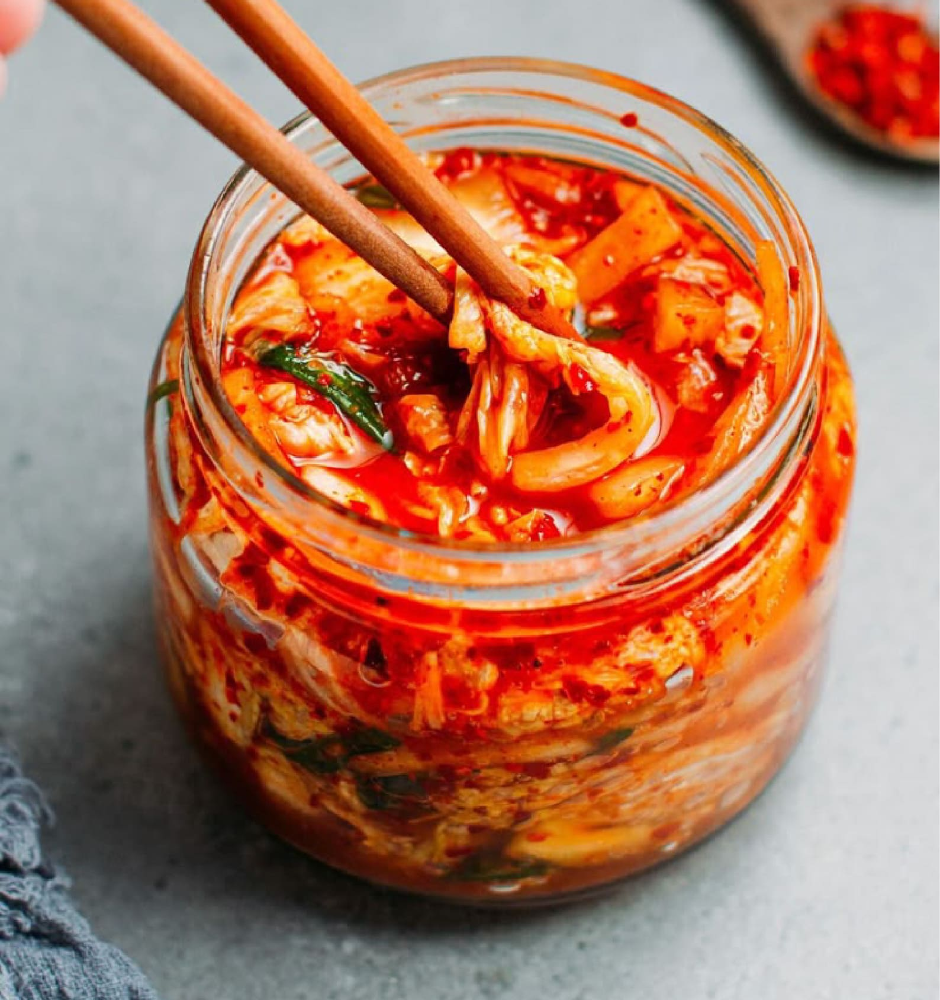
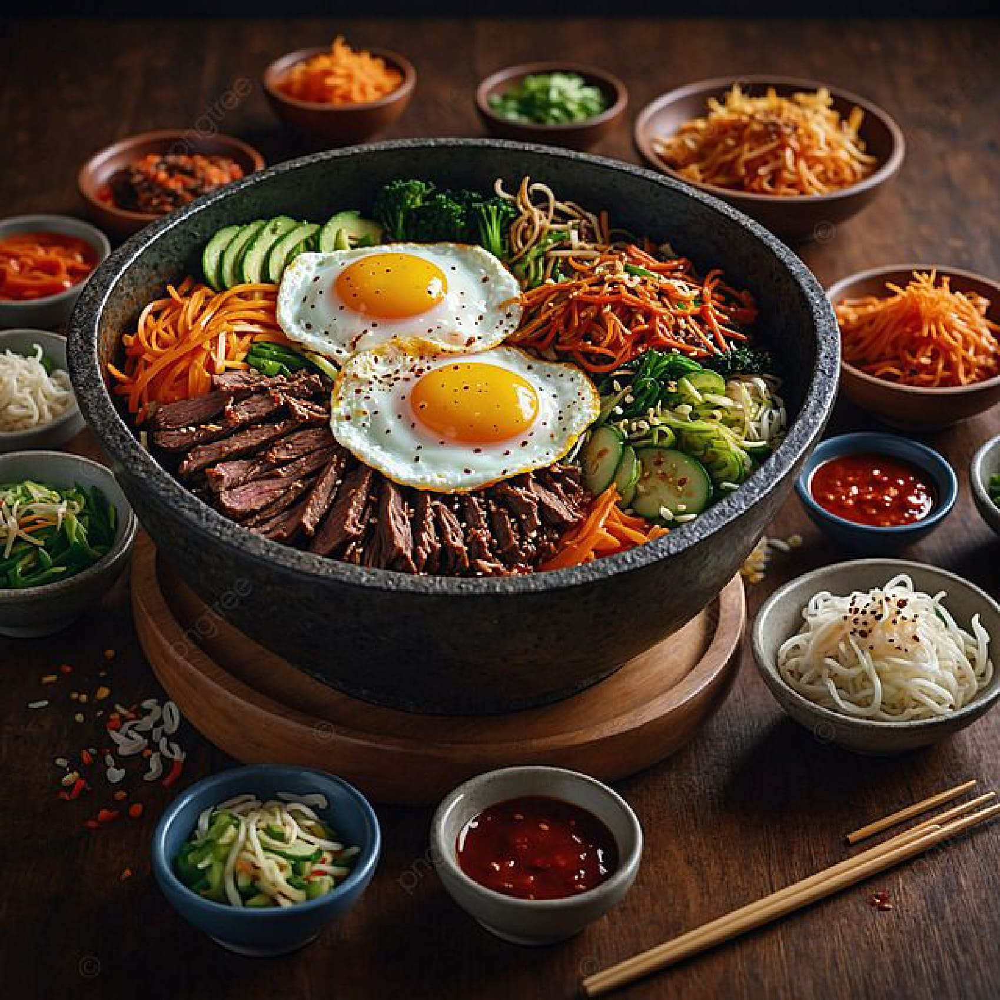
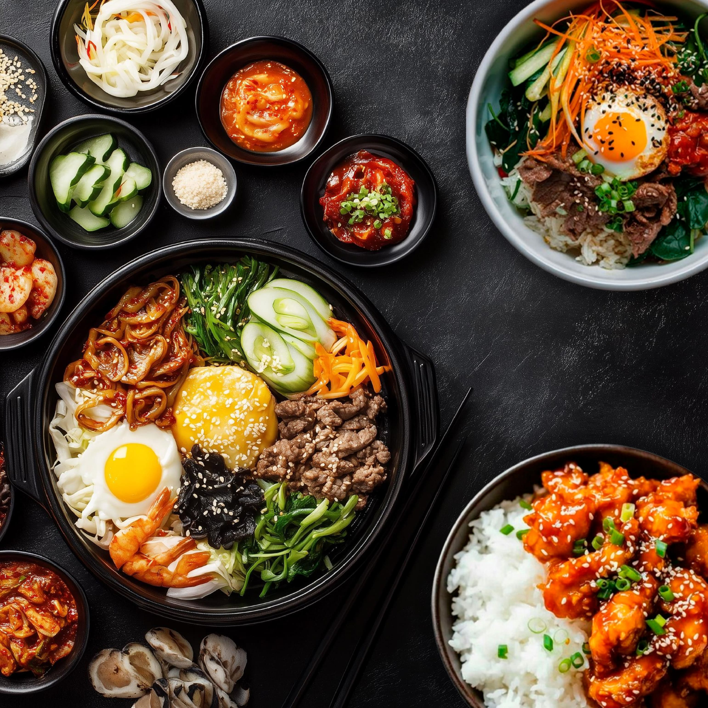
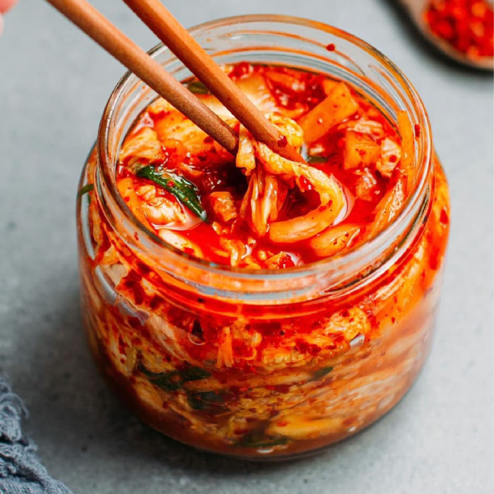
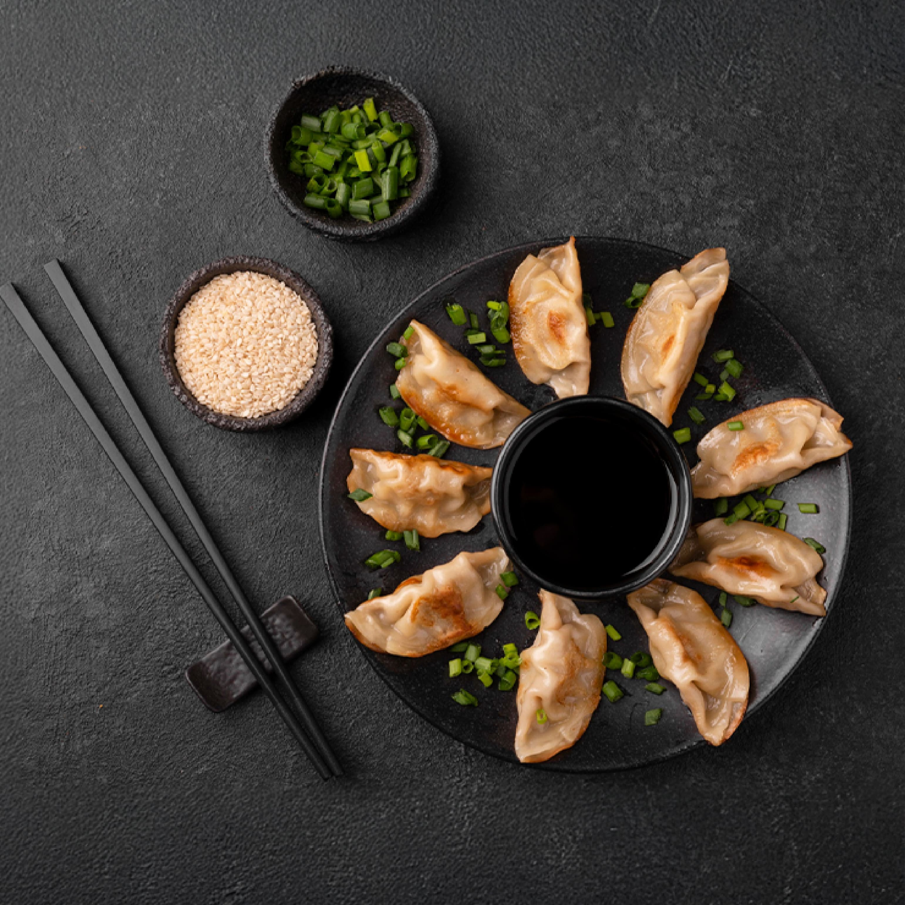
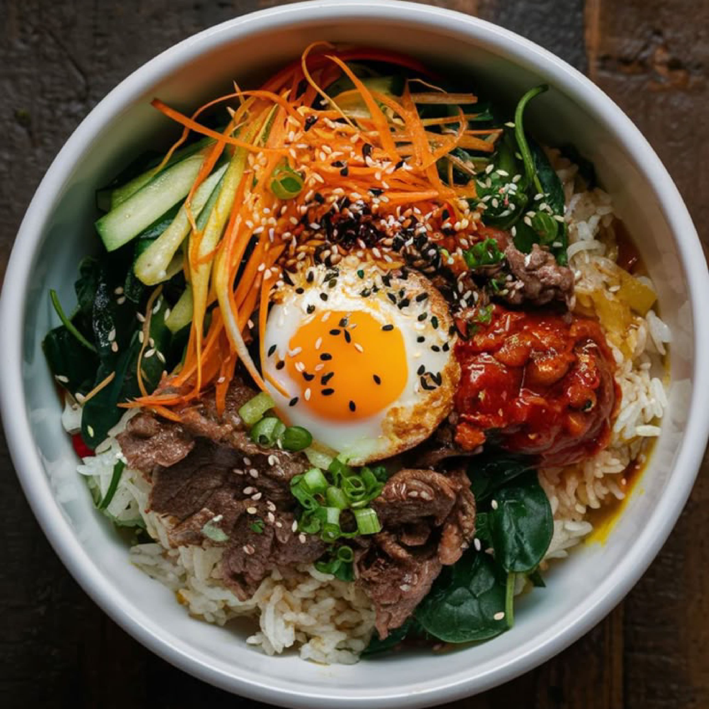
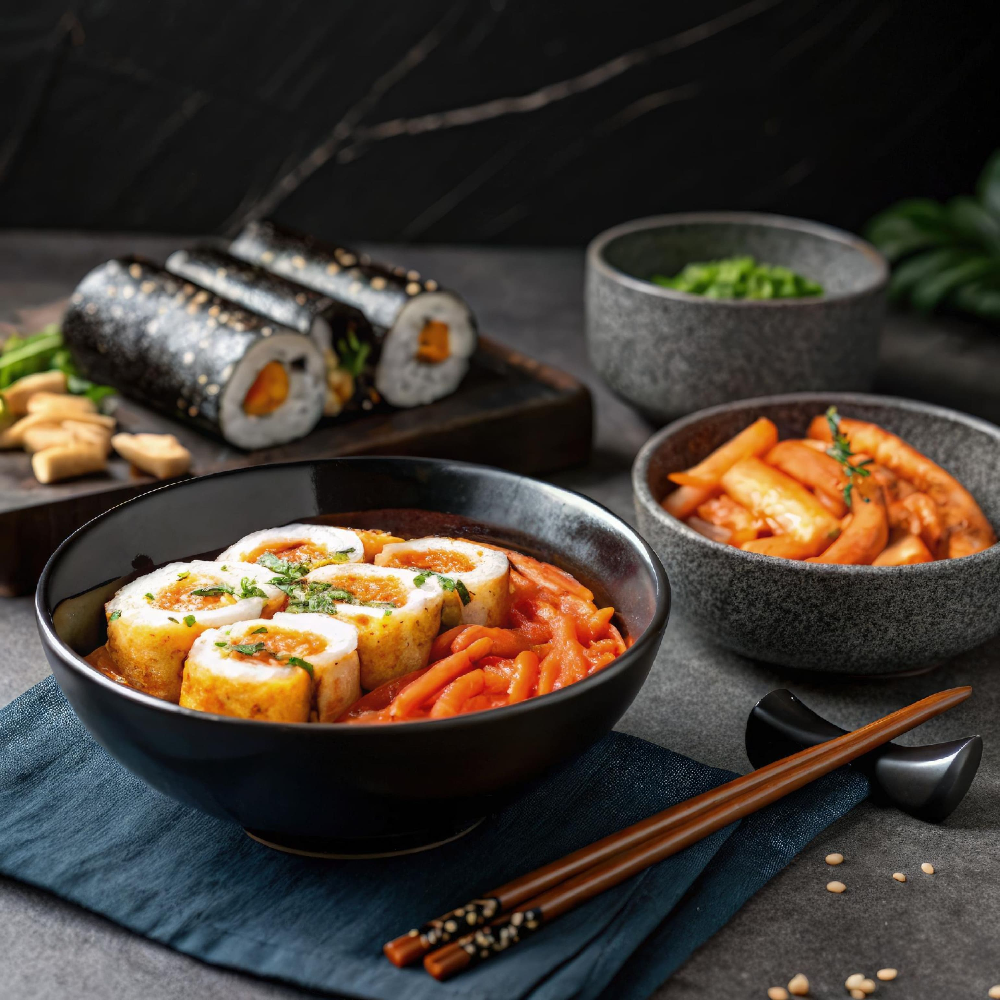
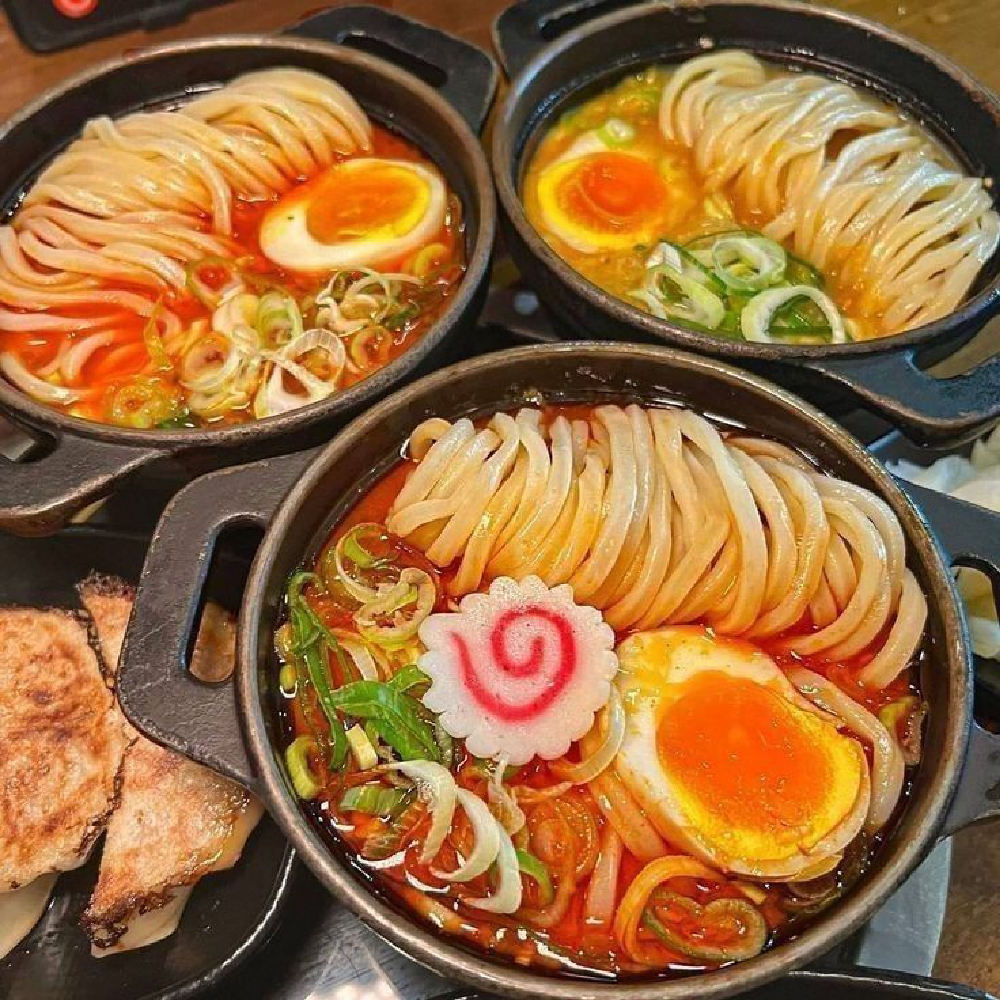
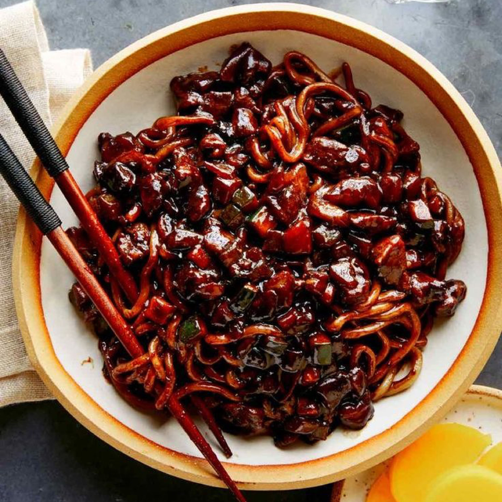
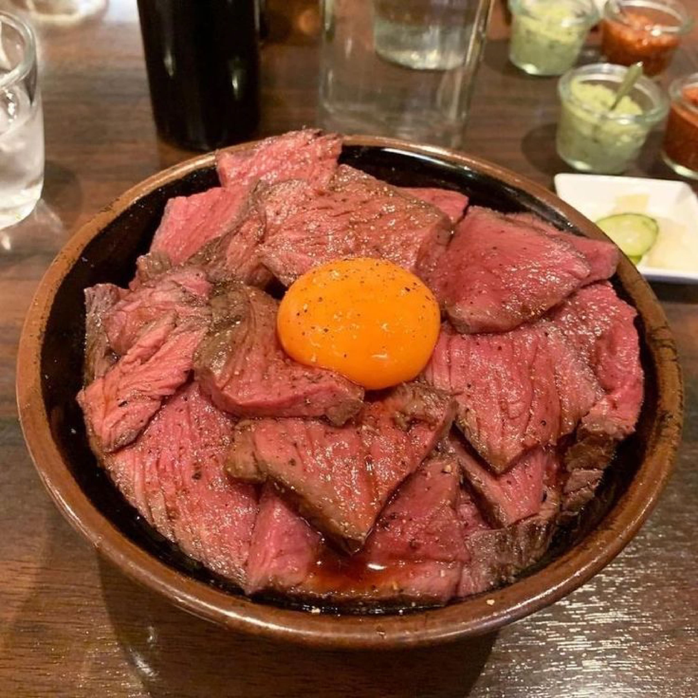

Fermentado de col picante, uno de los alimentos más tradicionales de Corea.

Arroz mezclado con vegetales, carne, huevo y gochujang.
Pasteles de arroz en salsa picante dulce.
La comida coreana es mucho más que sabor: es cultura, historia y tradición. Desde el
Kimchi
fermentado hasta el delicioso Bulgogi, cada plato refleja el equilibrio de colores, ingredientes y
significados ancestrales.
Compartir la comida es un pilar fundamental en Corea, donde el uso de palillos metálicos y la
variedad de Banchan (acompañamientos) hacen de cada comida una experiencia única. Además, festivales
como Chuseok y Seollal celebran la conexión entre la comida y la familia.
Explora los sabores y secretos de la gastronomía coreana en nuestro sitio web. ¡Prepárate para un viaje culinario único!
Ver más







